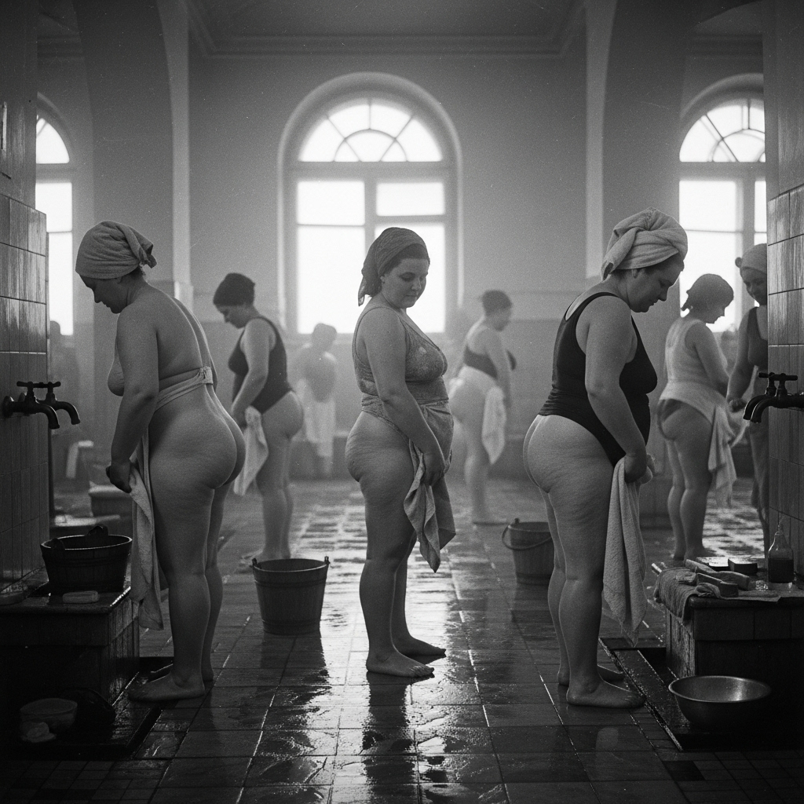
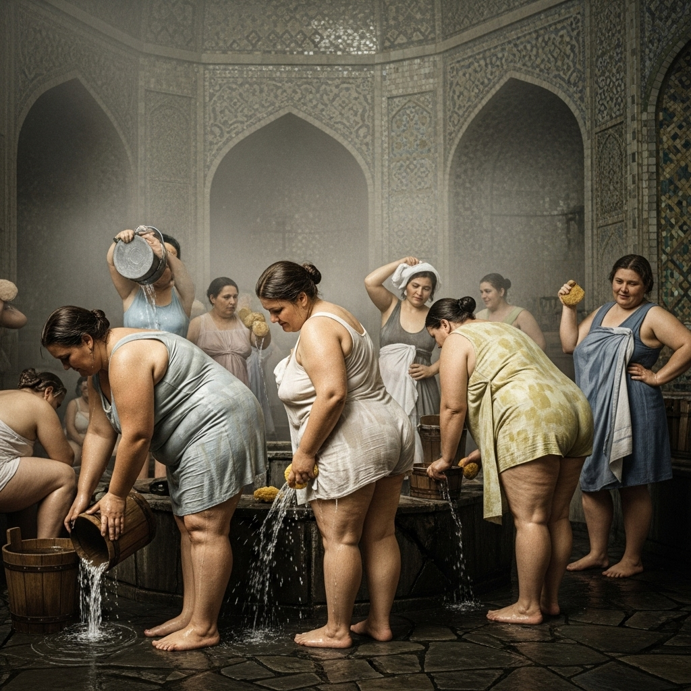
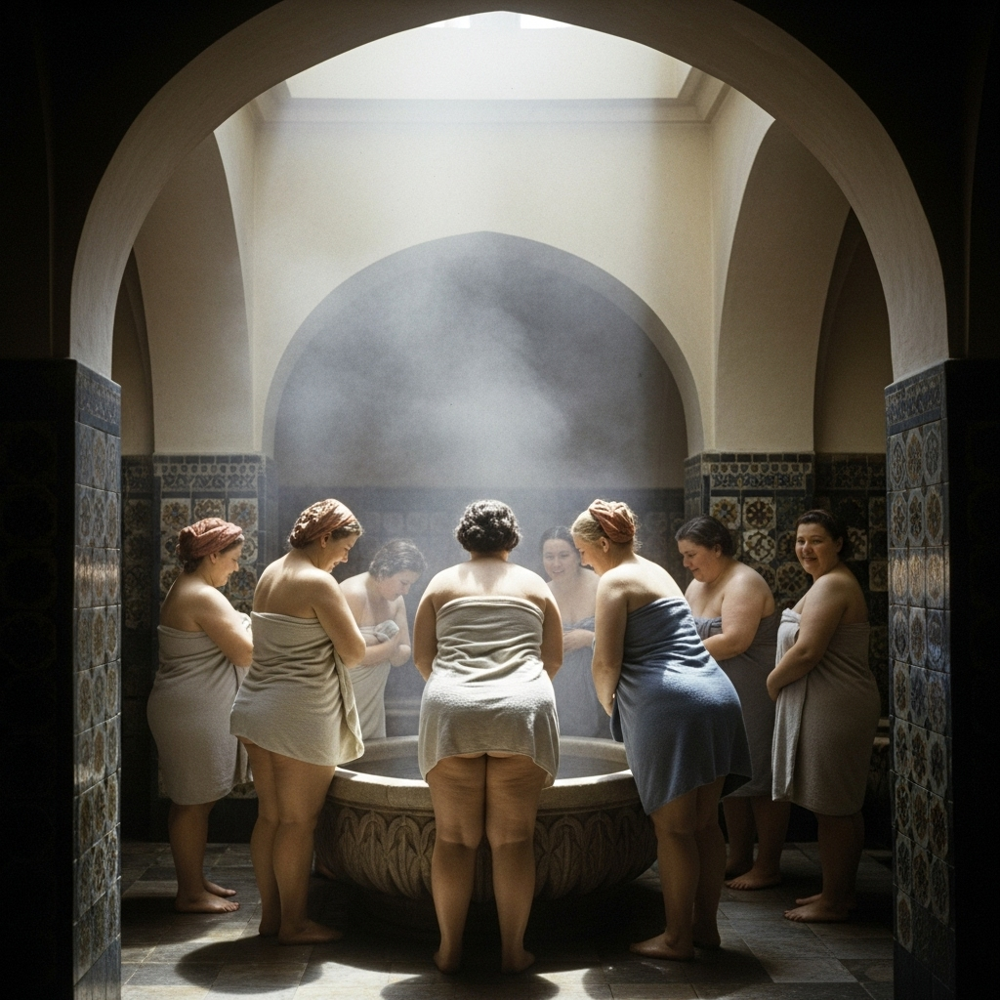
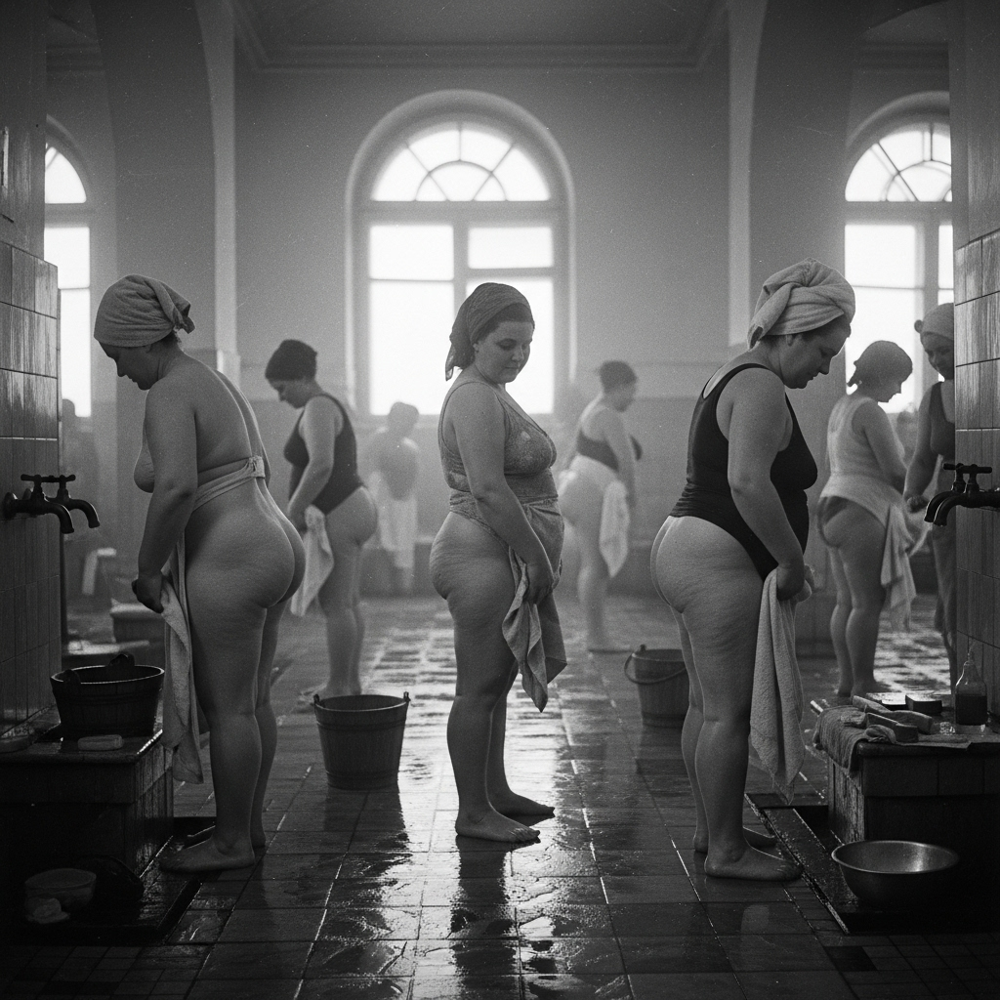
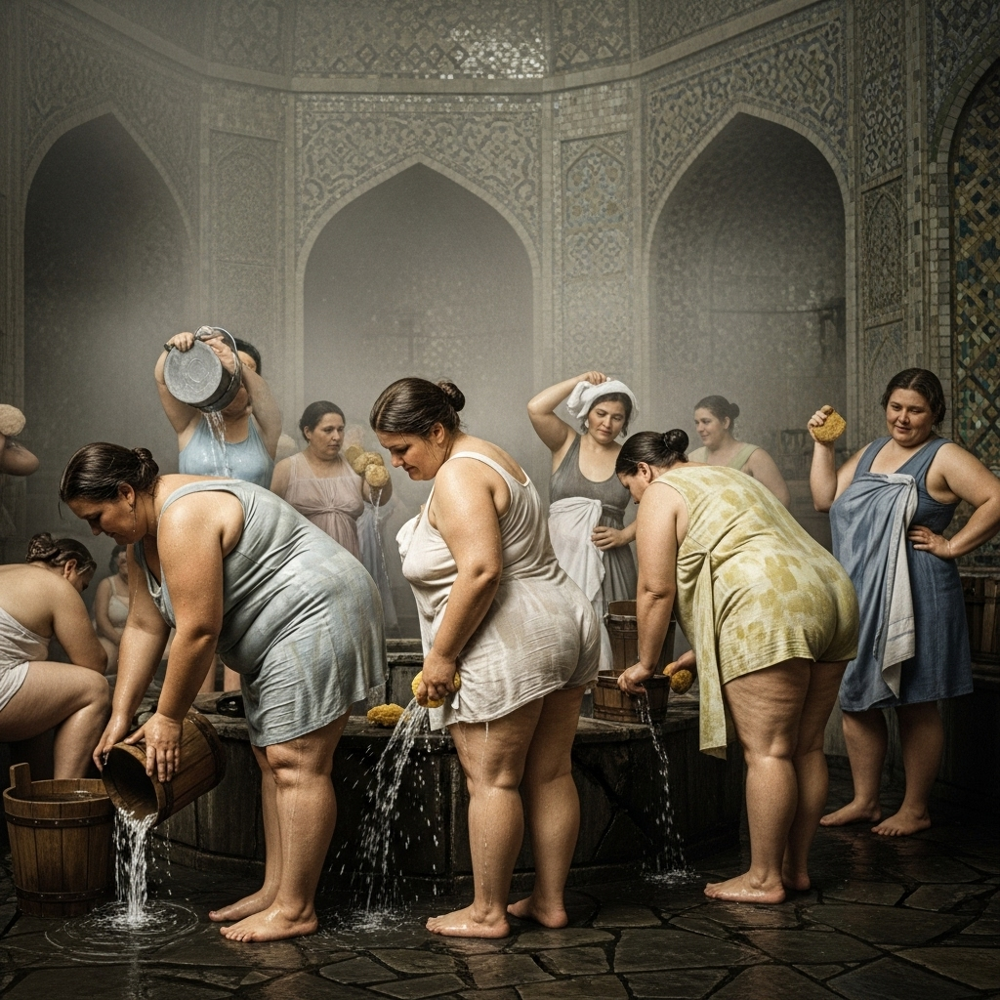
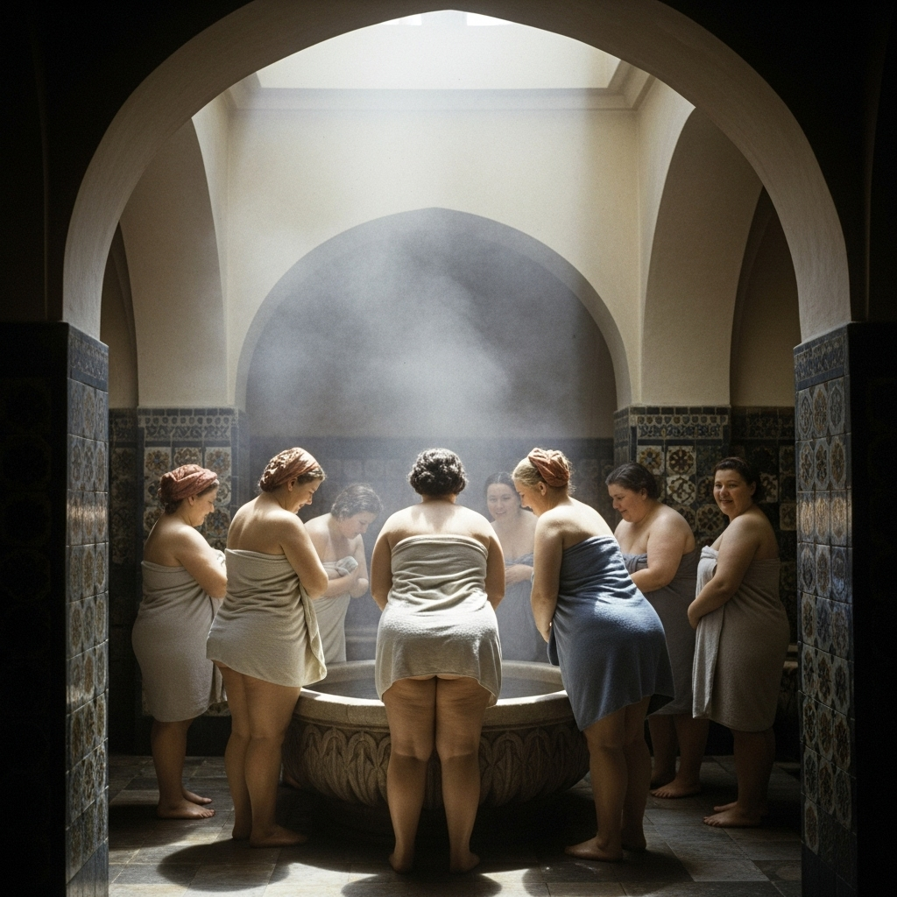
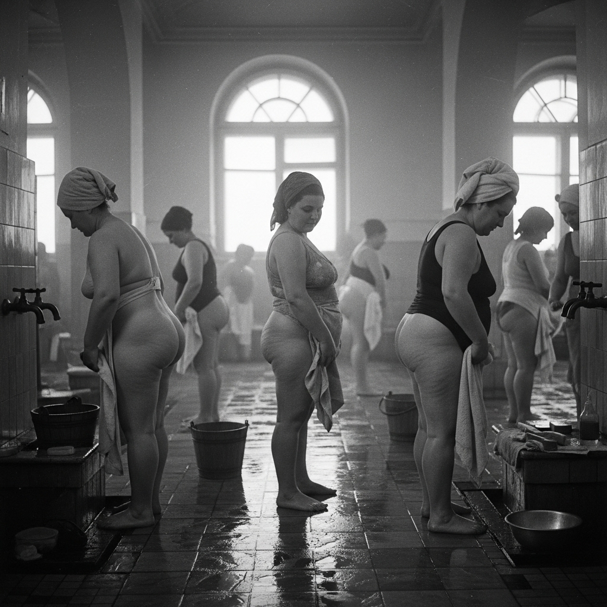
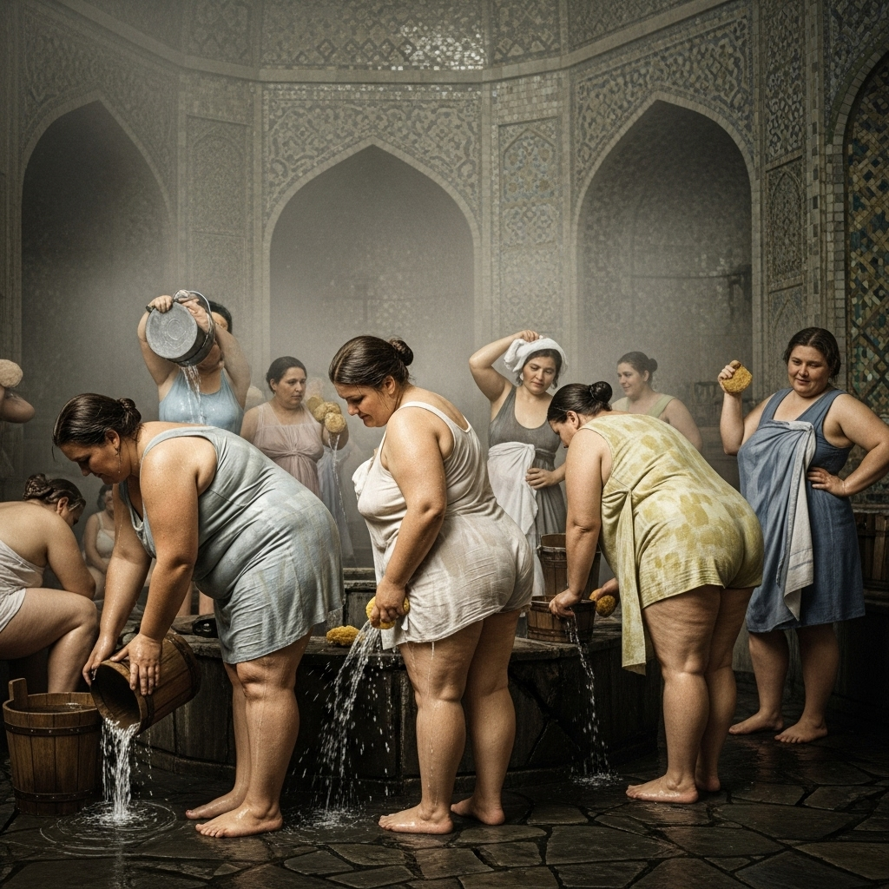
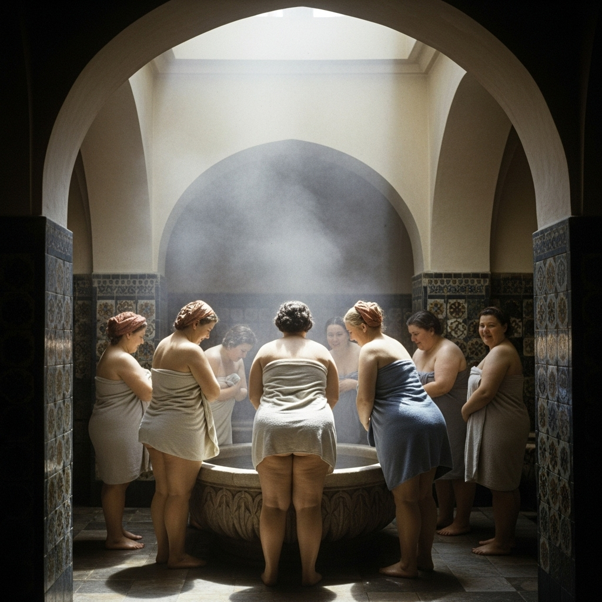

Среднеазиатская баня времён Второй мировой (1942), место отдыха и омовения для рабочих, военных и жителей тыловых городов. Эти фотографии показывают атмосферу того времени — людей, которые сохраняли быт и тепло в трудные годы.


